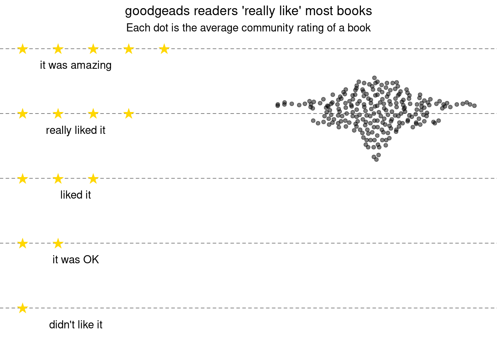
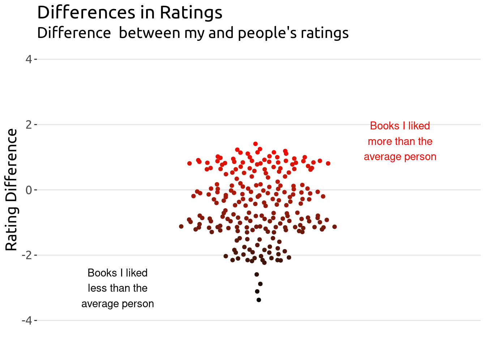
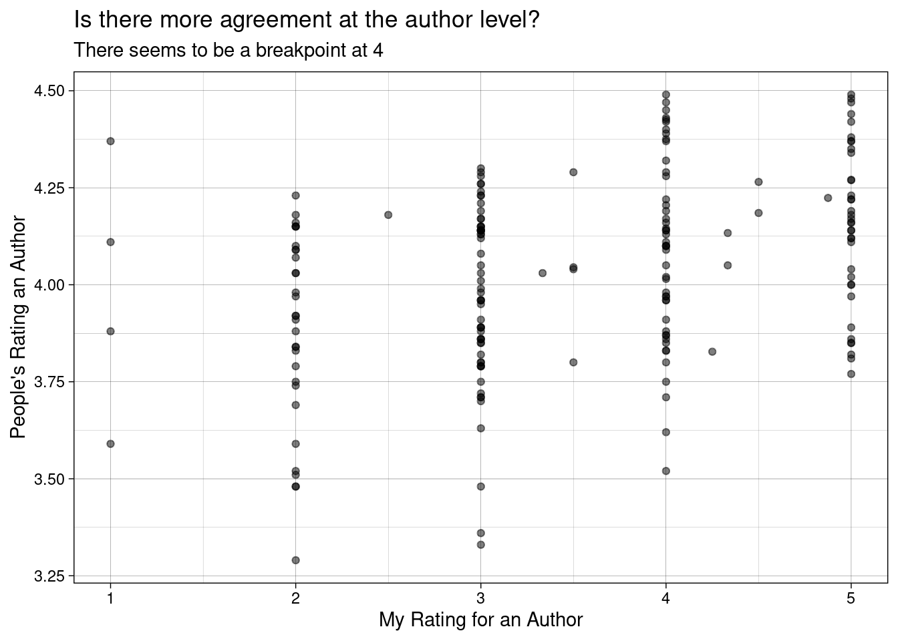
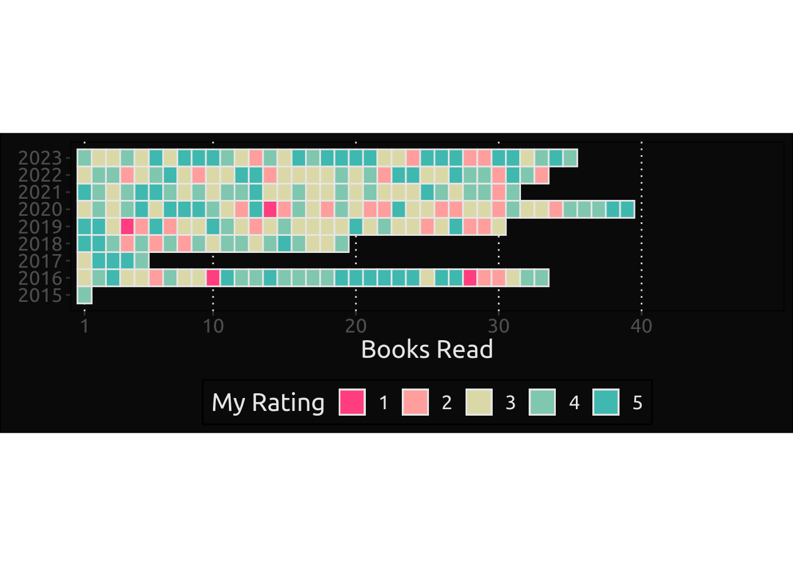
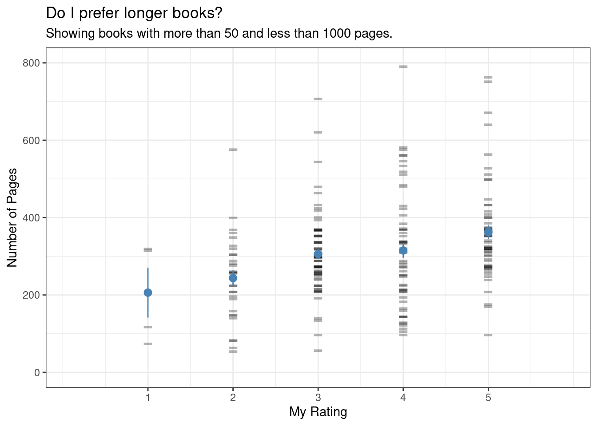

Around early January 2023, an idea came to my mind: the books I read were all written men. My initial guess was 90% male. That’s bad, I know. So I decided to do two things:
Check my current ratio
Whatever my current number was, make the effort to read more women authors.
As a bonus point, I would get to toy with the data (yay 🙌). If you have no interest in checking the dataviz analysis you can jump right into the gender ratios.
Fetch Data
I use goodreads to store info about the books I read or those that I am about to read. It turns out that goodreads lets you export your library (go here).
Disclaimer
It’s not the cleanest data:
Ranking is in whole point increments from 1 to 5, which somewhat constrains what the average values for books might be[^people-read].
The number of pages might be wrong (some titles have 0 pages)
The year of publishing might obscure the real year of writing (multiple editions obscure this more)
Unfortunately I don’t have good info on the days it took for me to read the book because I enter whatever ‘feels close enough’ by hand.
[^people-read]: People tend to read “good books”, so it’s expected that this average is skewed towards higher values, but see my other comments in the analysis.
Data Cleaning
Data comes mostly clean and can be imported into R (or any language of your choice).
Code
library(tidyverse)theme_set(theme(text =element_text(size =16, family ="Ubuntu")))df <-read_csv("mla_goodreads_library_export.csv",show_col_types =FALSE) %>% janitor::clean_names() %>%# remove books I haven't read or ratedfilter(my_rating >0)# create subtitle, might not be inclusive but probably pretty gooddf <- df %>%# make a copymutate(ori_title = title) %>%separate(col ="title",into =c("title", "subtitle"), sep =": ")
People’s Ratings are Super High
The average rating for books is pretty high. Even for those at the very bottom.
Code
stars_df <-data.frame(x =c(0, 0:1, 0:2, 0:3, 0:4), y =c(1, rep(2, 2), rep(3, 3), rep(4, 4), rep(5,5)))stars_df$x <- stars_df$x /10label_df <-data.frame(y =1:5-0.25,x = .15,label =c("didn't like it" , "it was OK", "liked it", "really liked it", "it was amazing"))df %>%ggplot(aes(x=1L, average_rating)) + ggbeeswarm::geom_quasirandom(width=0.3, alpha =0.5) +#xlim(0,2) +ylim(0.5, 5) +geom_point(data = stars_df, aes(x, y),pch ="★", size =5, color ="gold") +geom_text(data = label_df, aes(x, y, label=label)) +theme_void() +theme(panel.grid.major.y =element_line(color ="gray50", linetype =2),plot.title =element_text(hjust =0.5),plot.subtitle =element_text(hjust =0.5)) +labs(title ="goodgeads readers 'really like' most books",subtitle ="Each dot is the average community rating of a book")

I think there are a few things happening here:
People are way more optimistic and less critic than I am (no surprise)
People who really don’t like a book stop reading it early and might not bother rating it 1. Hence, there’s a sort of ‘survivor bias’ in the data.
People just don’t care about GoodRead’s rating and do their own versions which might have nothing to do with the 5 stars system .
Maybe I just happen to read “mostly good books”, so I would not find any book with very little rating.
Just to point out the comparison with my own ratings.
Code
df %>%mutate(delta = my_rating - average_rating,id =fct_reorder(factor(1:n()), delta)) %>%ggplot(aes(x =1, y = delta, color = delta)) +annotate(geom="text", x=1.7, y=1.5, label="Books I liked\nmore than the\naverage person",color ="red") +annotate(geom="text", x=.3, y=-3, label="Books I liked\nless than the\naverage person",color ="black") + ggbeeswarm::geom_quasirandom() +scale_color_gradient(low ="black", high ="red")+ylim(-4, 4) +xlim(0, 2) +theme(legend.position ="none", panel.grid =element_blank(),panel.grid.major.y =element_line(color ="gray90"),plot.background =element_blank(),panel.background =element_blank(),axis.line.x =element_blank(),axis.text.x =element_blank(),axis.ticks.x =element_blank()) +labs(x =element_blank(),y ="Rating Difference",title ="Differences in Ratings",subtitle ="Difference between my and people's ratings")

Top and Bottom
This analysis couldn’t continue without giving you the gossip of who’s at the top and bottom in my dataset. Mind you, these are the people’s ratings for the books I have read.
I was curious to see whether there authors that I should be reading more of, so I averaged all my ratings for each author.
Ranked data doesn’t show very nicely when you try to do a simple correlation plot, but we can just check it out.
Code
# How off am I from the average rating for each author?# looks like 3 stars is a breaking pointdf %>%group_by(author) %>%summarise(n =n(), my_rating =mean(my_rating),people_rating =mean(average_rating)) %>%ggplot(aes(my_rating, people_rating)) +geom_point(alpha =0.5)+theme_linedraw() +labs(x ="My Rating for an Author",y ="People's Rating an Author",title ="Is there more agreement at the author level?",subtitle ="There seems to be a breakpoint at 4")

As years go by
I have been adding info to goodreads for a while now, so I wanted to check things in time. In terms of quality, it seems that 2016 and 2023 were very good reading years. 2020 was quite bad.
Code
df %>%# for some reason, # date_read is na even though I did read themfilter(my_rating >0) %>%# fill with the date added, # which should be close enough # (anyway the only thing we have)mutate(date_read =if_else(is.na(date_read), date_added, date_read)) %>%arrange(date_read) %>%group_by(lubridate::year(date_read)) %>%mutate(year_order =1:n()) %>%ggplot(aes(year_order, lubridate::year(date_read), fill=factor(my_rating)))+geom_tile(color ="gray90", linewidth =0.5) + paletteer::scale_fill_paletteer_d("NineteenEightyR::miami2", direction =-1) +scale_y_continuous(breaks =seq(2015, 2023, 1)) +scale_x_continuous(limits =c(0, 50), breaks =c(1, 10, 20, 30, 40),expand =expansion(0, 0))+labs(x ="Books Read", y =element_blank(),fill ="My Rating") +theme(panel.background =element_rect(fill="gray4"),plot.background =element_rect(fill="gray4"),legend.position ="bottom",panel.grid =element_blank(),panel.grid.major.x =element_line(color ="gray90", linetype =3),legend.background =element_rect(fill=NA),text =element_text(color ="gray90")) +coord_fixed(ratio =1.2)

What’s the best book length for me?
One quick an easy thing to check is whether I enjoy longer or shorter books. There doesn’t seem to be much to see here, but the plot was nice and I decided to keep it.
Code
min_pages <-50max_pages <-1000df %>%filter(between(number_of_pages, min_pages, max_pages)) %>%ggplot(aes(x=my_rating, y=number_of_pages)) +geom_point(alpha=.3, pch="-", size=10) +stat_summary(aes(x = my_rating +0), geom ="pointrange", color="steelblue", fun.data=mean_se) +#coord_flip() +labs(title ="Do I prefer longer books?",subtitle = glue::glue("Showing books with more than {min_pages} and less than {max_pages} pages."),y ="Number of Pages", x ="My Rating")+theme_bw() +scale_x_continuous(expand =c(0.3, 0), breaks =1:5) +scale_y_continuous(limits =c(0, 800))

Show me the Ratios
I promised to check the gender ratios. So I used the gender package to predict gender using the information in the author’s name. There’s a few caveats:
The prediction might be dead wrong for many reasons. Author’s of the package acknowledge this right away, so I feel I shouldn’t repeat this info.
There are some authors that might fail to parse. Since this is a simple analysis, I didn’t want to delve too much on fixing things.
Some books are written by more than one author2. For simplicity’s sake, I’m going to go with the first author (I doubt it would change the ratio anyway). In goodreads’ database, we have an author_l_f column with only one person. So that’s what I am going to be using.
Code
# Before doing anything, only look at data from before 2023before2023 <-filter(df, lubridate::year(date_added) <2023)# get distinct authorsauthor_names <-unique(before2023$author_l_f)# split last-first and get firstauthor_names <-sapply(stringr::str_split(author_names, pattern =", "), function(x) x[[2]])# predictgender_prediction <- gender::gender(author_names)
The gender dataset looks like this
Code
gender_prediction
# A tibble: 117 × 6
name proportion_male proportion_female gender year_min year_max
<chr> <dbl> <dbl> <chr> <dbl> <dbl>
1 Adam 0.996 0.0041 male 1932 2012
2 Alan 0.997 0.0032 male 1932 2012
3 Alex 0.966 0.0343 male 1932 2012
4 Allie 0.0396 0.960 female 1932 2012
5 Amor 0.177 0.823 female 1932 2012
6 Anand 1 0 male 1932 2012
7 Andrew 0.996 0.004 male 1932 2012
8 Andy 0.988 0.0119 male 1932 2012
9 Anne 0.0025 0.998 female 1932 2012
10 Annie 0.0053 0.995 female 1932 2012
# ℹ 107 more rows
The ratio of predicted names is 0.71, which is not bad. There are some authors missing that failed to parse. For example, J.K. Rowling:
# fails to parse, also no Joannes in data!any(gender_prediction$name =="Joanne")# FALSE# She was in the dataset as J.K.any(author_names =="J.K.")# TRUE
To be honest, I am not worried about the parsing failures (it would take a long time to fix too…). If anything, it would make my male dominant dataset less male dominant. Let’s finally check this out.
Code
gender_prediction %>%count(gender) %>%mutate(percentage =round(n /sum(n), 3) *100) %>% gt::gt(caption ="Number of Books by Gender before 2023")
Number of Books by Gender before 2023
gender
n
percentage
female
16
13.7
male
101
86.3
I was aiming for 10%, so 13.7% is right there. Again, this is bad. But let’s check this year.
Code
# 2023 onwardsafter2023 <-filter(df, lubridate::year(date_added) >=2023)# get distinct authorsauthor_names <-unique(after2023$author_l_f)# split last-first and get firstauthor_names <-sapply(stringr::str_split(author_names, pattern =", "), function(x) x[[2]])# predictgender_prediction <- gender::gender(author_names)
Code
gender_prediction %>%count(gender) %>%mutate(percentage =round(n /sum(n), 3) *100) %>% gt::gt(caption ="Number of Books by Gender after 2023")
Number of Books by Gender after 2023
gender
n
percentage
female
11
42.3
male
15
57.7
This is WAY better: 42.3%! Yes, I did have to search google for good titles written by women. And yes, I do have access to a bookworm at home who happens to be my wife and can recommend me great pieces of writing. The good news is that the bar to find content by women was really low. It didn’t require extra effort on my side to vastly improve my reading experience.
The reading experience is the most important thing. I was missing out on great work. I cannot help but wonder why it was so difficult for me to get exposed to these pieces.
What I have learnt
I confirmed my own bias (~10% of content written by women) and found ways to improve it (currently getting to 50% for 2023!).
I am confident that there’s much else to learn from female voices. A huge world that I would never experience if I were to stay within my biased interpretation of reality. I hope to continue pushing for a higher women ratio. It’s not that I was actively trying to avoid reading women, but it’s quite telling that even these masterpieces didn’t make it to my reading list without me purposefully searching for “Good books by women” and the like.
Footnotes
I sometimes believe that it is unfair to rate a book you didn’t read. If I start a book and don’t like it, but having committed through it, I don’t rate it.↩︎
I am reading Poor Economics co-written by a man and a woman. This approach would remove Duflo from the analysis.↩︎
I'm so glad you're here. As you know, I create a blend of fiction, non-fiction, open-source software, and generative art - all of which I provide for free.
Creating quality content takes a lot of time and effort, and your support would mean the world to me. It would empower me to continue sharing my work and keep everything accessible for everyone.
How can you support my work?
There easy ways to contribute. You can buy me coffee, become a patron on Patreon, or make a donation via PayPal. Every bit helps to keep the creative juices flowing.
Not in a position to contribute financially? No problem! Sharing my work with others also goes a long way. You can use the following links to share this post on your social media.
Affiliate Links
Please note that some of the links above might be affiliate links. At no additional cost to you, I will earn a commission if you decide to make a purchase.
![]()